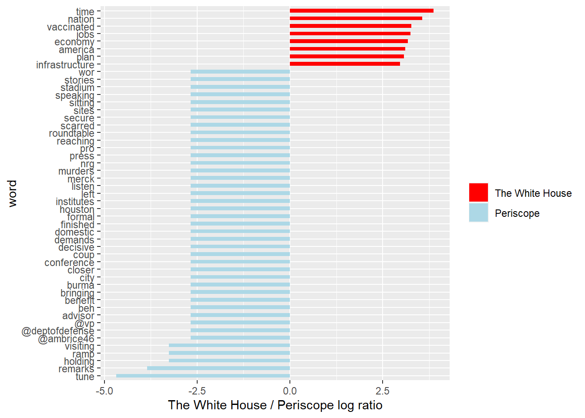

From @JoeBiden to @POTUS
組員：簡郁展, 潘立恆, 邱繼賢, 劉慧新, 陳暘
2021/6/8
1 Problematic
拜登正式就任美國第46任總統後，Twitter也將總統官方帳號
@POTUS轉交拜登團隊。多數美國媒體聲稱過去@JoeBiden的經營主要面向美國大眾推廣政策理念，相反的川普帳號只跟自己的支持者對話。而時下未見有拜登@POTUS的推特分析，我們有興趣的是拜登@POTUS在公共關係經營上還是走傳統、規律路線嗎？拜登@POTUS是僅僅將twitter當作一個宣傳政令跟政府講話的媒體平台，還是存在明顯的情緒宣傳？本專案預設即使去掉停詞之後，取得的關鍵字對於推文含意的辨識度還是有權重差異的。有些特別具象化單詞會能夠指涉與特定政策意涵或與特定政策事件相關，例如
vaccine/covid/jobs/economy/plan等等。而其他較模糊的政治相關用語(例如president/senate/congress等)、一般單詞則被視為不具有明確政策資訊內涵。因此，本專案簡單假設如果
@POTUS只是單純宣傳政令或講話的帳號，應該大量含有上述辨識度高的具象化單字以指涉特定議題或事件。或者，在喜歡數或轉推數較高的推文中，要可以觀察到上述情形。同時，本文也會比較@JoeBiden在情緒分析是否與@POTUS有明顯不同。
2 Workflow
2.1 Download Packages
library(twitteR)
library(dplyr)
library(tibble)
library(ggplot2)
library(stringr)
library(tidyr)
library(lubridate)
library(scales)
library(tidytext)
library(textdata)
library(cowplot)2.2 Collecting Data and Preprocessing
資料取得與資料前處理：從Twitter API與twitteR()的userTimeline()函數載入推文擷取資料，並轉換成data frame，時間跨度涵蓋拜登@POTUS帳號截止至2021年6月13日共760筆，另有從Kaggle抓取@JoeBiden現成資料。之後將取得的的data frame整理出我們需要的變數。
# Need apikey and token available from Twitter API:
# setup_twitter_oauth(apikey, apisecret, token, tokensecret)
# biden_tweets <- userTimeline("POTUS", n = 3200)
# biden_tweets_df <- tbl_df(map_df(biden_tweets, as.data.frame))
#Load the dataset obtained from TwitteR package
load(file = "biden_tweets_df.rda")
load(file = "AllJoeBidenTweets.rda")
# Mutate "source" and "hour" column and select other meaningful columns
df <- biden_tweets_df %>%
mutate(source = sapply(biden_tweets_df$statusSource , function(x) {
if (str_detect(x, pattern = "Twitter Web App")) return("Twitter_Web_App")
else if (str_detect(x, pattern = "Periscope")) return("Periscope")
else if (str_detect(x, pattern = "Twitter Media Studio")) return("Twitter_Media_Studio")
else if (str_detect(x, pattern = "Sprinklr")) return("Sprinklr")
else return("The_White_House")
})) %>%
select(id, source, text, created, retweetCount, favoriteCount) %>%
mutate(hour = hour(with_tz(created, "EST")))2.3 Analytic Method
- 從
biden_tweets_df中，我們進行發推來源的提取與時區調整，整理出id, source, text, created, retweetCount, favoriteCount, hour七個變數。 - 資料的分析主要就是對這些變數進行關係操弄，其中涉及時間資料、詞彙提取、直接對圖文進行分析，在方法上都需要對字串進行處理以及偵測。因此主要使用到的packages包含：
tidytext/stringr/tidyr/lubridate等。 - 我們用
unnest_tokens()從text斷詞並去掉停詞，得到tweet_words的data frame，主要用於文字分析與情緒分析。 - 本專案希望先呈現
@POTUS在時間資料上的表現，了解其整體發文動態。接著進入推文內容進行文字與情緒分析。最終嘗試回答我們在Problematic中的提問。
後面的個段落會一邊進行程式碼的說明，同時呈現觀察結果。
# Extracting tweet words
reg <- "([^A-Za-z\\d#@']|'(?![A-Za-z\\d#@]))"
tweet_words <- df %>%
filter(!str_detect(text, '^"')) %>%
mutate(text = str_replace_all(text, "https://t.co/[A-Za-z\\d]+|&", "")) %>%
unnest_tokens(word, text, token = "regex", pattern = reg) %>%
filter(!word %in% stop_words$word,
str_detect(word, "[a-z]")) %>%
arrange(desc(favoriteCount))3 General Analysis
3.1 Time line
對@POTUS從2月到六月的發文狀況做總覽，觀察不同發文來源在favoriteCount 以及 retweetCount的表現。
=======
3.1.1 Time line of retweetCount and FavoriteCount from Feb to June
下面兩張圖可以明顯看出大部分推文都是從The White House 發出來的，而favoriteCount的數量級大致上為retweetCount的十倍，兩者趨勢大體上相同。
Twitter Web App總共只發了四篇貼文，但其中的兩篇皆獲得了幾乎最高的retweetCount 和 favoriteCount。Sprinklr也只有5篇貼文，但favoriteCount/retweetCount前10名的推文中，就有3篇來自Sprinklr。- 但這些現象都只發生在一月拜登剛就職總統的時候。
ggplot(data = df) +
geom_col(mapping = aes(x = created, y = retweetCount, color = source, fill = source))
ggplot(data = df) +
geom_col(mapping = aes(x = created, y = favoriteCount, color = source, fill = source))
3.1.2 Tweeting in Hour of a Day
將發文時間轉換成美東時間後，可以觀察到以下現象：
@POTUS發文在下午較頻繁，並在下午1點、晚上8點左右達到高峰，而且凌晨1-5點的時間段發文比例相當低，發文時間相當規律。- 將每個時間段累積喜歡數加總後，發現與發文比例的趨勢相似，但發文數量多也可能造成喜歡數加總較多的現象。
- 若檢視每個時間段的喜歡數平均，在下午12-1點、下午5-6點、晚上8-10點都有明顯上升的趨勢，但與前兩張圖不同的是最高峰並非發生在晚上8點。除了晚上8點後發文比例比較少外，晚上8點後轉推數明顯較高也可能是提高觸及率與喜歡數的主要原 因。此外，若內文包含重要議題或是受關注的社會事件，也可能獲得可觀的喜歡與轉推。
# Form a new data frame with favoriteCount and retweetCount through whole time line
# Merge each plot into one
tweeting_hour <- df %>%
group_by(hour) %>%
summarise(number=n(),
sum_favoriteCount = sum(favoriteCount),
sum_retweetCount = sum(retweetCount),
mean_favoriteCount = mean(favoriteCount),
mean_retweetCount = mean(retweetCount)) %>%
arrange(desc(number))
p1 <- df %>%
count(hour = hour(with_tz(created, "EST"))) %>%
mutate(percent = n / sum(n)) %>%
ggplot(mapping = aes(hour, percent)) +
geom_line() +
scale_y_continuous(labels = percent_format()) +
labs(x = "Hour of a day", y = "% of tweets")
p2 <- ggplot(tweeting_hour) +
geom_line(aes(hour, sum_favoriteCount), color = "blue") +
labs(x = "Hour of a day")
p3 <- ggplot(tweeting_hour) +
geom_line(aes(hour, mean_favoriteCount), color = "red") +
labs(x = "Hour of a day")
p4 <- ggplot(tweeting_hour) +
geom_line(aes(hour, mean_retweetCount), color = "darkgreen") +
labs(x = "Hour of a day")
plot_grid(p1, p2, p3, p4, ncol = 2)
3.2 Picture/Link from each source
@POTUS的推文幾乎都附有照片或連結，差距非常顯著。藉由直接觀察拜登的推文，以及推文附帶的文字敘述進而推論這些圖片或連結多與特定會議、政策或社會事件有關。(詳參Comparison of Words)
# Whether a Picture/Link is likely to be included in a Tweet
# Detect regex with "t.co" in the "text" column
picture <- df %>%
filter(!str_detect(text, '^"')) %>%
count(source, picture = ifelse(str_detect(text, "t.co"),
"Picture/link", "No picture/link"))
picture## # A tibble: 7 x 3
## source picture n
## <chr> <chr> <int>
## 1 Periscope Picture/link 30
## 2 Sprinklr No picture/link 1
## 3 Sprinklr Picture/link 4
## 4 The_White_House No picture/link 49
## 5 The_White_House Picture/link 628
## 6 Twitter_Media_Studio Picture/link 45
## 7 Twitter_Web_App Picture/link 3df %>%
filter(!str_detect(text, '^"')) %>%
count(picture = ifelse(str_detect(text, "t.co"),
"Picture/link", "No picture/link")) %>%
ggplot() +
geom_bar(aes(picture, n), stat = "identity", width = 0.5) +
labs(x = "", y = "count")
4 Comparison of Words
在文字分析的環節，我們希望可以知道:哪些單詞彙引起我們的興趣？
@POTUS最常提到的詞彙，以及這些詞彙是否是Problematic的假設中提到在政策意涵上具有辨識度的字詞。- 區分這些詞彙的來源傾向，藉此觀察推文管理情形。
4.1 Word Frequency Plot
首先是詞頻圖，可以發現@POTUS整體而言政策辨識度高的詞彙包含: plan/jobs/covid/tune/rescue/vaccinated。推測與拜登的紓困法案《The American Jobs Plan》、《The American Rescue Plan Act of 2021》以及疫苗施打有關。
# Words with top 20 high occurrence
tweet_words %>%
count(word) %>%
mutate(word = reorder(word, n)) %>%
top_n(20, n) %>%
ggplot() +
geom_bar(aes(x = word, y = n), stat = "identity") +
ylab("frequency of occurrence") +
coord_flip()
4.2 Word Weighting of different sources (Video Streaming App and The White House)
接著我們希望了解@POTUS推文內容的來源傾向，我們更有興趣的東西是這些具有辨識度的字詞相對傾向被哪些發文來源使用，尤其是使用影音串流平台(Periscope)以及一般發文管道The White House在文字使用傾向上區別。因此，可以透過計算勝算比(odds ratio)來知道相對於影音平台，The White House更傾向具備那些文字特色，反之亦然。
# Use odds ratio for measuring word weighing of each source.
WhiteHouse_periscope_ratios <- tweet_words %>%
count(word, source) %>%
filter(sum(n) >= 5) %>%
spread(source, n, fill = 0) %>%
ungroup() %>%
mutate_each(funs((. + 1) / sum(. + 1)), -word) %>%
mutate(logratio = log2(The_White_House / Periscope)) %>%
arrange(desc(logratio))
# Present words with top 8 high log odds ratio from Periscope and The White House
WhiteHouse_periscope_ratios %>%
group_by(logratio > 0) %>%
top_n(8, abs(logratio)) %>%
ungroup() %>%
mutate(word = reorder(word, logratio)) %>%
ggplot(aes(word, logratio, fill = logratio < 0)) +
geom_bar(stat = "identity", width = 0.5) +
coord_fixed(ratio = 1000000) +
coord_flip() +
ylab("The White House / Periscope log ratio") +
scale_fill_manual(name = "", labels = c("The White House", "Periscope"),
values = c("red", "lightblue"))
可以發現@POTUS對於推文內容具有系統性的管理:
- 從影音平台發布的推文多與舉辦會議或是記者會有關，包含
tune/remarks/holding/visiting；而且較The White House更傾向標註其他政府的 twitter 帳號，包含副總統(@vp)、國防部(@deptofdefense)、白宮國內政策委員會總監(@ambrice46)。 The White House則較傾向單純發布政策內容相關的字詞，例如vaccinated/jobs/economy/plan/infrastructure，並且具有相較Periscope而言更高的文字辨識度(log ratio的值比較有次序)，不會像Periscope一樣有好幾個單詞有一樣的勝算比。
5 Sentiment Analysis
最後情緒分析的環節，我們想要知道@POTUS的文字使用在情緒上表現，包含較常傳達哪些情緒、以及不同類別的情緒傳達分別由哪字詞組成。對此，我們採用library(textdata)中的get_sentiments()獲取NRC Word-Emotion Association lexicon，將POTUS使用的英文單詞分成十種情緒類別，比較@POTUS跟@JoeBiden的差異。
5.1 Tweets Sentiment Overview
@POTUS整體較常使用正面的情緒字眼，包含positive/trust，以及中性的anticipation。
sentiment_overview <- tweet_words %>%
inner_join(get_sentiments("nrc")) %>%
filter(!is.na(sentiment)) %>%
count(sentiment, sort = TRUE)
sentiment_overview## # A tibble: 10 x 2
## sentiment n
## <chr> <int>
## 1 positive 863
## 2 trust 591
## 3 anticipation 447
## 4 negative 386
## 5 joy 285
## 6 fear 224
## 7 sadness 172
## 8 anger 168
## 9 surprise 149
## 10 disgust 745.2 Tweets Sentiment by Source
@POTUS每種發文來源的情緒傾向都類似。
sources <- tweet_words %>%
group_by(source) %>%
mutate(total_words = n()) %>%
ungroup() %>%
distinct(id, source, total_words)
by_source_sentiment <- tweet_words %>%
inner_join(get_sentiments("nrc"), by = "word") %>%
count(sentiment, id) %>%
ungroup() %>%
complete(sentiment, id, fill = list(n = 0)) %>%
inner_join(sources) %>%
group_by(source, sentiment, total_words) %>%
summarize(words = sum(n)) %>%
arrange(desc(total_words)) %>%
ungroup()
by_source_sentiment## # A tibble: 50 x 4
## source sentiment total_words words
## <chr> <chr> <int> <dbl>
## 1 The_White_House anger 5210 156
## 2 The_White_House anticipation 5210 414
## 3 The_White_House disgust 5210 67
## 4 The_White_House fear 5210 207
## 5 The_White_House joy 5210 267
## 6 The_White_House negative 5210 360
## 7 The_White_House positive 5210 780
## 8 The_White_House sadness 5210 162
## 9 The_White_House surprise 5210 138
## 10 The_White_House trust 5210 544
## # ... with 40 more rows5.3 Usage of Common Sentimental Words
看完情緒使用次數與發文來源的情緒傾向之後，我們想要知道到底是哪些字組組成這些情緒的表達。綜合各情緒類別的字詞組成，可以發現出現頻率較高且具備政策意涵的詞彙有:
positive/trust:rescue/vaccine/economyanticipation:plannegative/fear/sadness/anger:pandemic/tax
其他大部分的詞彙則無法分辨是否具備特別意義。
nrc_word_counts <- tweet_words %>%
inner_join(get_sentiments("nrc")) %>%
count(word, sentiment, sort = TRUE) %>%
ungroup()
nrc_word_counts$sentiment =
factor(nrc_word_counts$sentiment, levels = sentiment_overview$sentiment)
nrc_word_counts %>%
group_by(sentiment) %>%
top_n(8, n) %>%
arrange(desc(n)) %>%
ungroup() %>%
ggplot() +
geom_histogram(aes(x = reorder(word, n), y = n), stat = "identity", width = 0.75) +
coord_flip() +
facet_wrap(~sentiment, scales = "free") +
theme(axis.text.y = element_text(size = rel(0.75))) +
labs(x = "Word", y = "", title = "Frequency of Occurrence by Sentiment")5.4 Compared with @JoeBiden
@JoeBiden截至2020年11月使用positive與negative類別詞彙的傾向不相上下，而且兩者的使用量皆遠多過其他情緒類別。trust/fear/anger/sadness等情緒類別則差距不大。 這代表@JoeBiden在情緒傳達上的複雜程度遠大於@POTUS。@POTUS只傾向傳達正面情緒，但@JoeBiden都會使用。
reg <- "([^A-Za-z\\d#@']|'(?![A-Za-z\\d#@]))"
tweet_words2 <- AllJoeBidenTweets %>%
filter(!str_detect(tweet, '^"')) %>%
mutate(text = str_replace_all(tweet, "https://t.co/[A-Za-z\\d]+|&", "")) %>%
unnest_tokens(word, text, token = "regex", pattern = reg) %>%
filter(!word %in% stop_words$word,
str_detect(word, "[a-z]")) %>%
arrange(desc(likes))
sentiment_counts <- tweet_words2 %>%
left_join(get_sentiments("nrc")) %>%
count(word, sentiment, sort = TRUE) %>%
ungroup()
sentiment_df <- sentiment_counts %>%
group_by(sentiment) %>%
summarise(n = n()) %>%
arrange(desc(n)) %>%
ungroup()
sentiment_df## # A tibble: 11 x 2
## sentiment n
## <chr> <int>
## 1 <NA> 7685
## 2 positive 789
## 3 negative 707
## 4 trust 475
## 5 fear 401
## 6 anger 352
## 7 sadness 336
## 8 anticipation 305
## 9 joy 260
## 10 disgust 220
## 11 surprise 171@JoeBiden在各情緒類別的字詞組成上，較為顯著的有:
positive:presidentnegative/fear/anger:crisis/violence/fight/gunsurprise:trumpother/NA:vote/donald
即使資料擷取時間有涵蓋總統選舉期間，@JoeBiden除了選舉詞彙與人物詞彙之外(例如president/vote/trump)還是多使用模糊字眼。即使我們加入不會被情緒詞表算進去的NA值去看，還是觀察不到政策辨識度比較高的單詞。可以推論相較@POTUS，@JoeBiden更加的情緒化，而不傾向呈現具體政策意涵或社會事件，而@POTUS單純就是一個政策導向的帳號。
sentiment_counts$sentiment =
factor(sentiment_counts$sentiment, levels = sentiment_df$sentiment)
sentiment_counts %>%
group_by(sentiment) %>%
top_n(8, n) %>%
arrange(desc(n)) %>%
ungroup() %>%
ggplot() +
geom_histogram(aes(x = reorder(word, n), y = n), stat = "identity", width = 0.75) +
coord_flip() +
facet_wrap(vars(sentiment), scales = "free") +
theme(axis.text.y = element_text(size = rel(0.75))) +
labs(x = "Word", y = "", title = "Frequency of Occurrence by Sentiment")
6 Appendix
6.1 《Addiotional Trial》: Usage of Common Sentimental Words with Top Fifty FavoriteCount
# Preprocessing
favorite <- df %>%
arrange(desc(favoriteCount)) %>%
top_n(50)
# Collecting Tweets Words
reg <- "([^A-Za-z\\d#@']|'(?![A-Za-z\\d#@]))"
favorite_words <- favorite %>%
filter(!str_detect(text, '^"')) %>%
mutate(text = str_replace_all(text, "https://t.co/[A-Za-z\\d]+|&", "")) %>%
unnest_tokens(word, text, token = "regex", pattern = reg) %>%
filter(!word %in% stop_words$word,
str_detect(word, "[a-z]")) %>%
arrange(desc(favoriteCount))
# View the difference between whole @POTUS tweets and its top 50 favorite tweets
sentiment_overview_50 <- favorite_words %>%
inner_join(get_sentiments("nrc")) %>%
filter(!is.na(sentiment)) %>%
count(sentiment, sort = TRUE)
sentiment_overview_50## # A tibble: 10 x 2
## sentiment n
## <chr> <int>
## 1 positive 117
## 2 trust 104
## 3 anticipation 73
## 4 negative 59
## 5 joy 45
## 6 fear 25
## 7 surprise 24
## 8 anger 23
## 9 sadness 22
## 10 disgust 6favorite_word_counts <- favorite_words %>%
inner_join(get_sentiments("nrc")) %>%
count(word, sentiment, sort = TRUE) %>%
ungroup()
favorite_word_counts$sentiment =
factor(favorite_word_counts$sentiment, levels = sentiment_overview_50$sentiment)
favorite_word_counts$sentiment =
factor(favorite_word_counts$sentiment, levels = sentiment_overview_50$sentiment)
favorite_word_counts %>%
filter(n > 1) %>%
group_by(sentiment) %>%
top_n(8, n) %>%
ggplot() +
geom_histogram(aes(x = reorder(word, n), y = n), stat = "identity", width = 0.75) +
coord_flip() +
facet_wrap(vars(sentiment), scales = "free") +
theme(axis.text.y = element_text(size = rel(0.75))) +
labs(x = "Word", y = "", title = "Words with Top Fifty FavoriteCount by Sentiment")
6.2 組員分工
- 簡郁展(投入程度6): 題目發想、資料蒐集、@POTUS帳號觀察、文字分析、@JoeBiden情緒分析、統整製作Rmarkdown、製作PPT、口頭報告
- 邱繼賢(投入程度4): Timeline分析及繪圖、每日發文比例分析繪圖、發文照片/連結分析繪圖、各情緒用字繪圖、文獻閱讀
- 潘立恆(投入程度4): 喜歡數與轉推數貼文分析、Twitter 資料搜集、貼文情緒分析、文獻閱讀、Github site建置
- 陳暘(投入程度3): 關鍵字搜尋、Tweet資料閱讀、協助Github site建置
- 劉慧新(投入程度2): @JoeBiden帳號觀察、轉推數跟喜歡數整理觀察